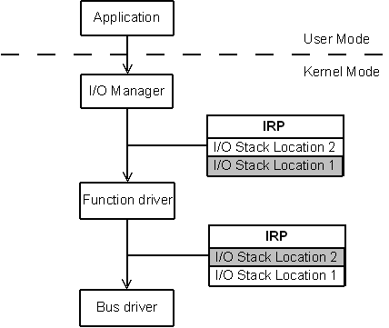

Laborator 5 - Device drivere în Windows [old]
Obiectivele laboratorului
- familiarizarea cu sistemul de I/O al nucleului Windows
- înțelegerea modului de prelucrarea a IRP-urilor și rolul îndeplinit de I/O manager
- dobândirea de cunoștințe de implementare a operațiilor de bază (dispatch routines) pentru un device driver
- lucrul cu evenimente
Cuvinte cheie
- I/O manager
- stacked drivers
- IRP – I/O Request Packet
DRIVER_OBJECTDEVICE_OBJECTDeviceExtension- înregistrarea/deînregistrarea unui dispozitiv
- namespace-uri pentru numele dispozitivelor
- link-uri simbolice pentru nume
- dispatch routines
driver→MajorFunction[]device→DeviceExtension- accesul la spațiul de adresă
- BUFFERED I/O
- DIRECT I/O
- neither I/O
- încheierea unui IRP (completion)
- sincronizare în Windows
- evenimente
Materiale ajutătoare
Concepte generale
 Windows NT a preluat modelul I/O folosit de la sistemul de operare VMS. Acest model folosește pachete pentru a descrie operațiile de I/O, pachete ce poartă denumirea de I/O Request Packets (IRP). Aceste pachete încapsulează informații precum ar fi operația (citire sau scriere), numărul de octeți de citit, poziția etc.
{kind=link}
I/O managerul este subsistemul care se ocupă de toate operațiile asociate cu IRP-urile: translatarea apelurilor de sistem în IRP-uri, alocarea de buffere, trimiterea IRP-urilor în stiva de device drivere, trimiterea rezultatelor proceselor după rezolvarea unui IRP etc. În Linux, un subsistem similar este block I/O layer.
Device driverele sunt grupate în stive: un device driver apelează funcțiile expuse de device driver-ul aflat mai jos în stivă. De cele mai multe ori, un dispozitiv are asociate cel puțin două drivere:
- functional driver care implementează funcționalitatea driverului
- bus driver care implementează conexiunea cu hardware-ul 1)
Primul device driver din stivă va primi pachetul IRP de la I/O manager prin intermediul rutinelor de dispatch (open, read, write, close, etc.). Device driverul poate să rezolve cererea imediat în rutina de dispatch, poate să marcheze operația ca fiind în așteptare și să o rezolve mai târziu, sau poate trimite pachetul următorului device driver din stivă. I/O managerul creează o stivă de zone de apel pentru fiecare IRP, în care fiecare element al stivei corespunde unui driver. Fiecare driver va accesa doar zona din IRP ce îi aparține, unde va regăsi infomații specifice operației aferente.
Structuri de date importante
Driver Object
Pentru fiecare driver încărcat în sistem există un obiect driver (DRIVER_OBJECT). Unui driver i se pot asocia mai multe dispozitive, descrise printr-un DEVICE_OBJECT (câte unul pentru fiecare dispozitiv pe care îl controlează).
{kind=link}
Structura DRIVER_OBJECT conține câteva câmpuri importante:
DeviceObject, o listă înlănțuită a dispozitivelor asociate driver-uluiDriverUnload, pointer la funcția de Unload a modululuiMajorFunction, un vector de pointeri către rutinele de dispatch , indexat dupa codul operației I/O
Device Object
Structura DEVICE_OBJECT este folosită pentru a reprezenta un dispozitiv asociat unui driver; este similară structurii struct cdev din nucleul Linux. Aceasta conține următoarele câmpuri frecvent folosite:
DriverObject, pointer către driver-ul pentru acest dispozitiv;Flags, câmp ce specifica strategia de transfer a datelor din spațiul de adresă al procesului:DO_BUFFERED_IO,DO_DIRECT_IOsau niciunul;DeviceExtension, un bloc de memorie rezidentă alocată de I/O manager la înregistrarea dispozitivului; această structură poate fi folosită de către programatorul driverului pentru a păstra informații specifice dispozitivului.
Device Extension
Modalitatea recomandată de alocare și folosire a datelor asociate cu un dispozitiv este definirea unei structuri, similar cu definirea unei structuri pe Linux. Pointerul se poate salva în câmpul DeviceExtension al structurii DEVICE_OBJECT, similar câmpului private_data al structurii file din Linux. În acest mod, dacă există mai multe dispozitive asociate unui driver, se poate identifica foarte simplu care sunt datele private asociate fiecărui dispozitiv. Se observă că în acest câmp se pot memora informații la înregistrarea dispozitivului care apoi sunt disponibile în rutinele de dispatch (read, write, close, etc.).
Exemplu de mai jos folosește în acest sens structura struct my_device_data:
#include <ntddk.h> struct my_device_data { PDEVICE_OBJECT DeviceObject; /* my data starts here */ }; NTSTATUS DriverEntry(PDRIVER_OBJECT driver, PUNICODE_STRING registry) { struct my_device_data * my_data; DEVICE_OBJECT *device; /* create device */ my_data = (struct my_device_data *) device->DeviceExtension; /* init my_data fields */ } NTSTATUS MyRead(PDEVICE_OBJECT device, IRP *irp) { struct my_device_data * my_data = (struct my_device_data *) device->DeviceExtension; /* read data */ }
I/O Request Packet (IRP)
{kind=link}
Un IRP este o structură alocată din memoria rezidentă și este format dintr-un header și din informații pentru fiecare device driver din stivă.
Câmpurile din header accesibile device driverelor sunt:
IoStatus, structură ce conține câmpuri care vor trebui completate de device driver la terminarea operației:Status, starea operației:STATUS_SUCCESSdacă operația s-a terminat cu succes, sau codul de eroare în caz contrar;Information, numărul de octeți transferați în caz de succes sau 0 în caz de eroare;
AssociatedIrp.SystemBuffer, pointer către bufferul alocat de sistem (dacă se folosește BUFFERED I/O);MdlAddress, pointer ce este folosit de device driver pentru maparea bufferului din user-space în kernel-space (dacă se folosește DIRECT I/O);UserBuffer, pointer către bufferul din user-space (dacă nu se folosește nici BUFFERED I/O, nici DIRECT I/O);
După header, în IRP sunt plasate informații adresate device driverelor din stivă. Pentru a afla informațiile adresate device driverului curent, trebuie apelată funcția IoGetCurrentIrpStackLocation. Aceasta va întoarce o structură de tipul IO_STACK_LOCATION, ce conține următoarele câmpuri:
MajorFunction, care identifică tipul operației (open,read,write,closeetc.)Parameters, o uniune cu parametri pentru diversele tipuri de cereri (open,read,write,closeetc.); parametrii includ numărul de octeți de citit, poziția etc.:Read, structură ce conține parametrii pentru o operație read:ByteOffset, offset-ul de la care se realizează citireaLength, numărul de octeți citiți
Write, structură ce conține parametrii pentru o operație write:ByteOffset, offset-ul la care se realizează scriereaLength, numarul de octeți scriși
DeviceIoControl, structură ce conține parametrii pentru o operație ioctl:IoControlCode, codul de control pentru ioctlInputBufferLength, dimensiunea buffer-ului de intrareOutputBufferLength, dimensiunea buffer-ului de ieșire
DeviceObject, obiectul ce identifică dispozitivul pe care se face operațiaFileObject, obiectul ce identifică fișierul pe care se face operația
Spre exemplu, pentru o operație de read, se va accesa buffer-ul și dimensiunea în octeți pentru citire:
IRP* irp; char *buffer = irp->AssociatedIrp.SystemBuffer; PIO_STACK_LOCATION pIrpStack = IoGetCurrentIrpStackLocation(irp); int size = pIrpStack ->Parameters.Read.Length; /* read size bytes from buffer */
Similar, pentru operații de write sau ioctl se vor accesa parametrii corespunzători.
La terminarea procesării unui IRP, trebuie completată informația legată de status (IoStatus) și apelată funcția IoCompleteRequest.
În cazul în care nu se transferă date între kernel-space și user-space se va termina procesarea unui IRP astfel:
irp->IoStatus.Status = STATUS_SUCCESS; irp->IoStatus.Information = 0; IoCompleteRequest(irp, IO_NO_INCREMENT);
În cazul în care se transferă date între kernel-space și user-space, este necesar să se completeze câmpul IoStatus.Information la numărul de octeți transferați:
irp->IoStatus.Status = STATUS_SUCCESS; irp->IoStatus.Information = nrTransferredBytes; IoCompleteRequest(irp, IO_NO_INCREMENT);
În anumite situații, IRP-ul nu poate fi procesat imediat; în aceste cazuri este necesar să se specifice faptul ca IRP-ul are nevoie de prelucrări ulterioare, prin intermediul funcției IoMarkIrpPending. În momentul în care IRP-ul va fi procesat, este necesar să se apeleze funcția IoCompleteRequest.
Înregistrarea și deînregistrarea dispozitivelor
În rutina DriverEntry, în afară de inițializări, driverul va trebui să detecteze dispozitivele fizice prezente în sistem și să le anunțe acestuia cu ajutorul funcției IoCreateDevice:
NTSTATUS IoCreateDevice(PDRIVER_OBJECT DriverObject, ULONG DeviceExtensionSize, PUNICODE_STRING DeviceName, DEVICE_TYPE DeviceType, LONG DeviceCharacteristics, BOOLEAN Exclusive, PDEVICE_OBJECT *DeviceObject);
Numele dispozitivului (DeviceName) trebuie să fie de forma “\Device\MyDevice”. Tipul (DeviceType) poate fi unul din cele definite de Microsoft, sau poate fi definit de producător. Caracteristicile dispozitivului (DeviceCharacteristics) sunt și ele din cele mai diverse așa că recomandăm consultarea DDK. Flagul Exclusive indică modul de acces la dispozitiv: dacă este inițializat la TRUE atunci dispozitivul nu va putea fi deschis simultan de mai multe thread-uri. În DeviceObject se întoarce un pointer către noul obiect de tip device alocat.
Odată cu alocarea obiectului se alocă și spațiu pentru datele private, de dimensiunea specificată în DeviceExtensionSize. Imediat după crearea obiectului de tip device, device driverul trebuie să inițializeze câmpul DeviceExtension cu informațiile necesare. Ele pot fi apoi accesate din același câmp, mai târziu, în rutinele de dispatch.
Următoarea secvență de cod creează un device cu numele “\Device\MyDevice”, de un tip nedefinit (care nu se încadrează între tipurile definite de Microsoft) :
char devName[] = {'\\','D','e','v','i','c','e','\\', 'M','y','D','e','v', 'i', 'c', 'e',0}; int ret; ret = IoCreateDevice(driver, sizeof(struct my_device_data), TO_UNICODE(devName, &devUnicodeName), FILE_DEVICE_UNKNOWN, 0, FALSE, &device); if (ret != STATUS_SUCCESS) { /* error report */ return ret; } //...
Funcțiile folosite la înregistrarea driverului primesc ca parametru un șir de caractere unicode. Pentru a transforma un șir de caractere ASCII în șir unicode se folosește funcția TO_UNICODE, a cărei implementare a fost prezentată în laboratorul 3.
Pentru a putea fi accesat din user-space, device driverul trebuie să primească un nume într-un namespace vizibil din user-space (acesta fiind ”??”). Device driverele realizează acest lucru prin crearea unei legături simbolice (“\??\MyDevice”) la numele dispozitivului (“\Device\MyDevice”), cu ajutorul funcției IoCreateSymbolicLink.
Următoarea secvență de cod creează o legătură simbolică pentru driver-ul înregistrat mai sus:
char linkName[] = {'\\','?','?','\\', 'M','y','D','e','v', 'i', 'c', 'e',0}; int ret; ret = IoCreateSymbolicLink(TO_UNICODE(linkName, &linkUnicodeName), &devUnicodeName)); if (ret != STATUS_SUCCESS) { /* error report */ return ret; }
Numele legăturii simbolice va fi “\??\MyDevice”, iar devUnicodeName este un șir unicode ce reprezintă numele dispozitivului (“\Device\MyDevice”).
La inițializare trebuie specificat și modul în care se realizează transferul datelor între user-space și kernel-space, prin setarea câmpului Flags al variabilei de tip DEVICE_OBJECT la DO_BUFFERED_IO sau DO_DIRECT_IO. Dacă nici una din aceste opțiuni nu este configurată, I/O managerul nu transferă datele între user-space și kernel-space (acestea vor putea fi accesate direct din user-space prin câmpul UserBuffer al IRP-ului).
Următoarea secvență înregistrează MY_NR_DEVICES dispozitive:
#include <ntddk.h> struct my_device_data { PDEVICE_OBJECT DeviceObject; /* my data starts here */ //... }; NTSTATUS DriverEntry(PDRIVER_OBJECT driver, PUNICODE_STRING registry) { struct my_device_data *my_data; DEVICE_OBJECT *device; int i; NTSTATUS ret; UNICODE_STRING devUnicodeName, linkUnicodeName; memset(&devUnicodeName, 0, sizeof(devUnicodeName)); memset(&linkUnicodeName, 0, sizeof(linkUnicodeName)); for(i=0; i<MY_NR_DEVICES; i++) { char devName[]={'\\','D','e','v','i','c','e','\\', 'M','y','D','e','v','i','c','e', '0'+i,0}; char linkName[]={'\\','?','?','\\', 'M','y','D','e','v','i','c','e', '0'+i,0}; if ( (ret = IoCreateDevice(driver, sizeof(struct my_device_data), TO_UNICODE(devName, &devUnicodeName), FILE_DEVICE_UNKNOWN, 0, FALSE, &device) ) != STATUS_SUCCESS) goto error; if ( (ret = IoCreateSymbolicLink(TO_UNICODE(linkName, &linkUnicodeName), &devUnicodeName)) != STATUS_SUCCESS) goto error; device->Flags |= DO_BUFFERED_IO; my_data = (struct my_device_data *) device->DeviceExtension; /* initialize my_data fields */ if (devUnicodeName.Buffer) RtlFreeUnicodeString(&devUnicodeName); if (linkUnicodeName.Buffer) RtlFreeUnicodeString(&linkUnicodeName); } driver->DriverUnload = DriverUnload; /* initialize dispatch routines */ return STATUS_SUCCESS; error: if (devUnicodeName.Buffer) RtlFreeUnicodeString(&devUnicodeName); if (linkUnicodeName.Buffer) RtlFreeUnicodeString(&linkUnicodeName); DriverUnload(driver); return ret; }
În caz de eroare, vor trebui eliberate toate resursele alocate în funcție pâna la apariția erorii; in exemplul dat, la apariția unei erori în funcția DriverEntry, se va apela DriverUnload pentru eliberarea acestor resurse (în acest caz trebuie avut grijă ca în funcția DriverUnload să se verifice ce resurse au fost alocate și doar acestea să fie eliberate); o alternativă este folosirea de etichete distincte pentru fiecare eroare.
Pentru deînregistrare, trebuie mai întâi ștearsă legătura simbolică pentru fiecare dispozitiv folosind funcția IoDeleteSymbolicLink și apoi trebuie șterse dispozitivele cu IoDeleteDevice.
Următoarea secvență deînregistrează cele MY_NR_DEVICES dispozitive înregistrate mai sus:
void DriverUnload(PDRIVER_OBJECT driver) { DEVICE_OBJECT *device; UNICODE_STRING linkUnicodeName; int i; for(i=0; i<MY_NR_DEVICES; i++) { char linkName[] = {'\\','?','?','\\', 'M','y','D','e','v','i','c','e', '0'+i,0}; if (TO_UNICODE(linkName, &linkUnicodeName)) IoDeleteSymbolicLink(&linkUnicodeName); if (linkUnicodeName.Buffer) RtlFreeUnicodeString(&linkUnicodeName); } while ((device = driver->DeviceObject)) IoDeleteDevice(device); }
Accesul la spațiul de adresă al procesului
Pentru transferul datelor între user-space și kernel-space în general se folosesc două abordări: BUFFERED I/O sau DIRECT I/O. I/O managerul este cel care realizează aceste operații și pune la dispoziția driver-ului un buffer în care se vor găsi datele transmise din spațiul de adresă al procesului. După cum s-a precizat, un IRP are trei buffere în acest scop; în funcție de tipul de transfer, datele preluate din spațiul de adresă al procesului se vor găsi în unul dintre acestea. În afară de aceste două abordări, există și posibilitatea ca driver-ul să gestioneze singur transferul de date, fără ajutorul managerului I/O.
BUFFERED I/O
Managerul alocă un buffer în kernel space și copiază datele din/în user space; device driverul poate accesa bufferul din kernel space.
Pentru a folosi modul BUFFERED I/O 2), trebuie realizate următoarele operații:
- la înregistrarea dispozitivului, în funcția
DriverEntry, se setează câmpulFlagsal variabilei de tipDEVICE_OBJECTlaDO_BUFFERED_IO:device->Flags |= DO_BUFFERED_IO;
- la accesarea buffer-ului, în funcția
readsauwrite, se va accesa câmpulAssociatedIrp.SystemBufferdinIRP:buffer = irp->AssociatedIrp.SystemBuffer;
DIRECT I/O
Managerul validează bufferul din user space și adună informațiile necesare accesării bufferului; device driverul trebuie să pregătească bufferul din user space pentru folosire prin maparea în kernel-space (și eventual marcarea paginilor astfel încât acestea să nu fie evacuate).
Pentru a folosi modul DIRECT I/O 3), trebuie realizate următoarele operații:
- la înregistrarea dispozitivului, în funcția
DriverEntry, se setează câmpulFlagsal variabilei de tipDEVICE_OBJECTlaDO_DIRECT_IO:device->Flags |= DO_DIRECT_IO;
- la accesarea buffer-ului, în funcția
readsauwrite, se va accesa câmpulMdlAddressdinIRP; pentru a accesa memoria referită de acest pointer se folosește macro-ul MmGetSystemAddressForMdlSafe:buffer = MmGetSystemAddressForMdlSafe(irp->MdlAddress, NormalPagePriority);
Neither Buffered Nor Direct I/O
Există și posibilitatea ca driver-ul să gestioneze singur transferul de date, fără ajutorul managerului I/O 4). Pentru a nu folosi managerul I/O, trebuie realizate următoarele operații:
- la înregistrarea dispozitivului, în funcția
DriverEntry, nu se modifică/setează câmpulFlagsal variabilei de tipDEVICE_OBJECT - la accesarea buffer-ului, în funcția
readsauwrite, se va accesa câmpulUserBufferdinIRP; codul care accesează memoria referită de acest pointer trebuie inclus într-o secvență try/except și trebuie să folosească funcțiile ProbeForRead sau ProbeForWrite înainte de acces; spre exemplu, în funcțiareadse va executa următoarea secvență:NTSTATUS status; PIO_STACK_LOCATION pIrpStack = IoGetCurrentIrpStackLocation(irp); try { ProbeForWrite(irp->UserBuffer,pIrpStack ->Parameters.Read.Length,TYPE_ALIGNMENT(char)); buffer = irp->UserBuffer; /* write to buffer */ } except (EXCEPTION_EXECUTE_HANDLER) { status = GetExceptionCode(); /* Error handling code */ }
Rutine de dispatch
Pentru ca sistemul să știe ce funcții să apeleze pentru a trata o cerere din user space, device driverul trebuie să înregistreze una sau mai multe rutine de dispatch. Rutinele de dispatch au următoarea signatură:
NTSTATUS MyOpen(PDEVICE_OBJECT device, IRP *irp); NTSTATUS MyRead(PDEVICE_OBJECT device, IRP *irp); NTSTATUS MyWrite(PDEVICE_OBJECT device, IRP *irp); NTSTATUS MyDeviceIoControl(PDEVICE_OBJECT device, IRP *irp); NTSTATUS MyClose(PDEVICE_OBJECT device, IRP *irp); NTSTATUS MyCleanup(PDEVICE_OBJECT device, IRP *irp);
Înregistrarea rutinelor de dispatch se face în rutina DriverEntry, prin setarea intrărilor IRP_MJ_CREATE, IRP_MJ_READ, etc. din vectorul MajorFunction (similar structurii struct file_operations din Linux), vector care se găsește în obiectul ce identifică driverul:
NTSTATUS DriverEntry(PDRIVER_OBJECT driver, PUNICODE_STRING registry) { //... driver->DriverUnload = DriverUnload; driver->MajorFunction[ IRP_MJ_CREATE ] = MyOpen; driver->MajorFunction[ IRP_MJ_READ ]= MyRead; driver->MajorFunction[ IRP_MJ_WRITE ] = MyWrite; driver->MajorFunction[ IRP_MJ_DEVICE_CONTROL ]= MyDeviceIoControl; driver->MajorFunction[ IRP_MJ_CLEANUP ] = MyCleanup; driver->MajorFunction[ IRP_MJ_CLOSE ] = MyClose; //... }
Open și Close
Funcțiile asociate cererilor de tip IRP_MJ_CREATE, IRP_MJ_CLOSE se vor apela la deschiderea, respectiv închiderea dispozitivului. Un dispozitiv, in terminologia unui device driver, este un obiect ce identifică un dispozitiv fizic (exemplu: portul serial COM1, portul serial COM2, portul paralel LPT1). Un driver poate gestiona mai multe dispozitive folosind, în general, aceleași funcții de dispatch. Revenind la cele două rutine, acestea sunt, în general, folosite de device driver pentru a inițializa hardware-ul, a aloca buffere și a iniția alte acțiuni administrative.
O funcție Open va avea următoarea structură:
NTSTATUS MyOpen(PDEVICE_OBJECT device, IRP *irp) { struct my_device_data * my_data = (struct my_device_data *) device->DeviceExtension; /* validate access to device */ /* initialize device */ irp->IoStatus.Status = STATUS_SUCCESS; irp->IoStatus.Information = 0; IoCompleteRequest(irp, IO_NO_INCREMENT); return STATUS_SUCCESS; }
Funcția Close va avea o structură similară: va reseta informațiile de acces, va deinițializa dispozitivul si va marca terminarea procesării IRP-ului.
La apelul funcțiilor CreateFile și CloseHandle din user-space asupra dispozitivului, se vor apela funcțiile MyOpen, respectiv MyClose din driver. Un exemplu de apel din user-space:
#include <windows.h> HANDLE hDevice = CreateFile("\\\\.\\MyDevice", GENERIC_READ | GENERIC_WRITE, 0, NULL, OPEN_EXISTING, FILE_ATTRIBUTE_NORMAL, NULL); if (hDevice == INVALID_HANDLE_VALUE) { /* report error */ } CloseHandle(hDevice);
După cum se poate observa, aplicația din user-space folosește prefix-ul \\.\ pentru a accesa device-ul; intern, I/O manager-ul trasformă acest prefix în \??\, înainte de a începe căutarea dispozitivului .
Read și Write
Funcțiile asociate cererilor de tip IRP_MJ_READ și IRP_MJ_WRITE trebuie să trateze cererile de citire, respectiv scriere. În aceste rutine, device driverele în general pregătesc hardware-ul și pornesc operațiile de citire sau scriere. Offset-ul și numărul de octeți de transferat se află din IO_STACK_LOCATION: Parameters.Write.ByteOffset, Parameters.Write.Length pentru scriere și Parameters.Read.ByteOffset, Parameters.Read.Length pentru citire.
De cele mai multe ori, o funcție Read va avea următoarea structură:
NTSTATUS MyRead(PDEVICE_OBJECT device, IRP *irp) { char *readBuffer; int sizeToRead, sizeRead; PIO_STACK_LOCATION pIrpStack; struct my_device_data *my_data = (struct my_device_data *) device->DeviceExtension; pIrpStack = IoGetCurrentIrpStackLocation(irp); sizeToRead = pIrpStack->Parameters.Read.Length; readBuffer = irp->AssociatedIrp.SystemBuffer; /* read sizeToRead bytes from device and write to readBuffer */ irp->IoStatus.Status = STATUS_SUCCESS; irp->IoStatus.Information = sizeRead; IoCompleteRequest(irp, IO_NO_INCREMENT); return STATUS_SUCCESS; }
Pentru operații mai complexe, trebuie ținut cont și de poziția de la care se citește, dată în Parameters.Write.ByteOffset.
Structura funcției Write este similară: numărul de octeți de scris se obține din Parameters.Write.Length, se citesc Parameters.Write.Length octeți din buffer-ul IRP-ului și se scriu pe device, iar la sfârșit trebuie marcată terminarea procesării IRP-ului. Dacă IRP-ul este păstrat intern și se amână procesarea lui, nu este necesar ca funcțiile Read sau Write să conțină codul pentru marcarea terminării procesării IRP-ului.
La apelul funcțiilor ReadFile și WriteFile din user-space, se vor apela funcțiile MyRead, respectiv MyWrite din driver. Un exemplu de apel din user-space:
BOOL status; status = ReadFile(hDevice, inBuffer, inCount, &bytesRead, NULL); status = WriteFile(hDevice, outBuffer, outCount, &bytesWritten, NULL); if(!status) { /* report error */ }
DeviceIoControl
Funcția asociată cu IRP_MJ_DEVICE_CONTROL se folosește la apeluri de gen DeviceIoControl (echivalentul ioctl din Unix). Codul (sub)operației, dimensiunea bufferului de intrare și dimensiunea bufferului de ieșire se află din IO_STACK_LOCATION: Parameters.DeviceIoControl.IoControlCode, Parameters.DeviceIoControl.InputBufferLength și Parameters.DeviceIoControl.OutputBufferLength. Bufferele de intrare sau ieșire se pot accesa din IRP (în funcție de modul de transfer din user-space în kernel-space).
Codul operației este dat de un număr pe 32 de biți, în care sunt codificate informații despre apelul DeviceIoControl. Funcția CTL_CODE oferă un mecanism simplu de generare a acestor coduri:
CTL_CODE(DeviceType, ControlCode, TransferType, RequiredAccess);
Tipul de transfer (TransferType) specifică tipul de acces la spațiul de adresă al procesului (METHOD_BUFFERED, METHOD_IN_DIRECT, METHOD_OUT_DIRECT, METHOD_NEITHER). După cum s-a specificat mai sus, accesul la spațiul de adresă al procesului pentru operațiile read și write este setat în momentul inițializării dispozitivului, la setarea flag-urilor acestuia. În cazul funcției DeviceIoControl, accesul este codificat direct în codul funcției și depinde de parametrul TransferType (astfel tipul de acces la spațiul de adresa al procesului depinde de codul DeviceIoControl, și nu de flag-urile device-ului).
Un exemplu pentru o funcție de dispatch de tip MyDeviceIoControl:
#define MY_IOCTL_IN CTL_CODE(FILE_DEVICE_UNKNOWN, 0x01, \ METHOD_BUFFERED, FILE_READ_DATA | FILE_WRITE_DATA) NTSTATUS MyDeviceIoControl(PDEVICE_OBJECT device, IRP *irp) { ULONG controlCode, inSize, bytesWritten = 0; PIO_STACK_LOCATION pIrpStack; char* buffer; NTSTATUS status = STATUS_SUCCESS; struct my_device_data * my_data = (struct my_device_data *) device->DeviceExtension; pIrpStack = IoGetCurrentIrpStackLocation(irp); controlCode = pIrpStack->Parameters.DeviceIoControl.IoControlCode; buffer = irp->AssociatedIrp.SystemBuffer; switch (controlCode) { case MY_IOCTL_IN: inSize = pIrpStack->Parameters.DeviceIoControl.InputBufferLength; /* validate parameters (inSize) */ /* read inSize bytes from buffer */ break; default: status = STATUS_INVALID_DEVICE_REQUEST; } irp->IoStatus.Status = status; irp->IoStatus.Information = bytesWritten; IoCompleteRequest(irp, IO_NO_INCREMENT); return STATUS_SUCCESS; }
Pentru un apel DeviceIoControl care transferă date în user-space, trebuie să setați câmpul IoStatus.Information al IRP-ului la numărul de octeți scriși (I/O manager-ul va transfera IoStatus.Information octeți în user-space).
La apelul funcției DeviceIoControl asupra dispozitivului din user-space, se va apela funcțiaMyDeviceIoControl din driver. Un exemplu de apel din user-space:
BOOL status; DWORD bytesReturned; status = DeviceIoControl(hDevice, controlCode, inBuffer, inSize, outBuffer, outSize, &bytesReturned, NULL); if(!status) { /* report error */ }
Dacă apelul DeviceIoControl nu întoarce date, parametrul outBuffer va fi NULL și outSize zero, iar dacă nu necesită date de intrare, inBuffer va fi NULL si inSize zero. Pentru mai multe informații despre DeviceIoControl consultați Platform SDK.
Cleanup
Funcția asociată cu IRP_MJ_CLEANUP se apelează atunci când un proces renunță la o cerere (fie că procesul renunță, fie că, spre exemplu, procesul s-a terminat și sistemul de operare renunță la cerere). În această rutină device driverele trebuie să termine toate IRP-urile asociate cu FileObject-ul din IRP-ul primit ca parametru (al funcției de tratare IRP_MJ_CLEANUP).
Dacă driverul păstrează intern IRP-uri, este nevoie să marcheze terminarea procesării pentru fiecare dintre ele. Astfel, funcția Cleanup trebuie să execute următoarea secvență:
NTSTATUS MyCleanup(PDEVICE_OBJECT device, IRP *irp) { /* for every myIrp */ { /* get myIrp */ if (IoGetCurrentIrpStackLocation(myIrp)->FileObject == IoGetCurrentIrpStackLocation(irp)->FileObject) { myIrp->IoStatus.Status = STATUS_CANCELLED; IoCompleteRequest(myIrp, IO_NO_INCREMENT); } } irp->IoStatus.Status = STATUS_SUCCESS; irp->IoStatus.Information = 0; IoCompleteRequest(irp, IO_NO_INCREMENT); return STATUS_SUCCESS; }
Sincronizare
Pentru realizarea sincronizării între thread-uri, există obiecte de sincronizare (Kernel Dispatcher Objects):
În orice moment, aceste obiecte se pot afla în una din stările signaled sau not-signaled. Un thread poate aștepta ca un astfel de obiect sa ajungă în starea signaled printr-un apel al funcției KeWaitForSingleObject.
Evenimente
Un eveniment kernel este reprezentat de KEVENT și poate fi de două tipuri: eveniment de notificare (NotificationEvent) sau de sincronizare (SynchronizationEvent). În cazul unui eveniment de notificare, când acesta trece în starea signaled rămâne în această stare până când este resetat în mod explicit. Mai mult, toate thread-urile care așteaptă la acest eveniment sunt eliberate când evenimentul trece în starea signaled. Un eveniment de sincronizare trece automat în starea not-signaled în momentul în care un thread care așteptă la eveniment este eliberat.
Funcțiile folosite pentru manipularea evenimentelor sunt următoarele:
- KeInitializeEvent inițializează evenimentul; parametrul
Typepoate fiNotificationEventsauSynchronizationEvent, iarStateindică starea inițială a evenimentului; - KeSetEvent trece evenimentul în starea signaled;
- KeClearEvent și KeResetEvent resetează evenimentul (trec evenimentul în starea non-signaled);
- KeReadStateEvent întoarce starea curentă a evenimentului (valoare nenulă dacă este în starea signaled, zero în caz contrar);
Un exemplu de utilizare:
- "inițializare"
KEVENT event; NTSTATUS status; KeInitializeEvent(&event, SynchronizationEvent, FALSE);
- "signal"
KeSetEvent(&event, IO_NO_INCREMENT, FALSE);
- "așteptare"
status = KeWaitForSingleObject(&event, Executive, KernelMode, TRUE, NULL); if (!NT_SUCCESS(status)) { /* handle error */ }
Echivalențe device drivere în Linux și device drivere în Windows
Tabelul de mai jos prezintă echivalențele (acolo unde există) între API-ul aferent device driverelor în Linux și device driverelor în Windows.
| Concept | Linux | Windows |
|---|---|---|
| structură aferentă dispozitivului | struct cdev | DEVICE_OBJECT |
| structură aferentă driverului | N/A | DRIVER_OBJECT |
| pointer către structură proprie | file→private_data | DEVICE_OBJECT→DeviceExtension |
| operații expuse de dispozitive | struct file_operations | DRIVER_OBJECT→MajorFunctions |
| controlul dispozitivului | ioctl | DeviceIoControl |
| accesul la spațiul de adresă | char __user *buffer | BUFFERED_IO, DIRECT_IO, neither I/O |
| nume uzual de dispozitiv | /dev/my_device | \\.\MyDevice |
| împachetare cerere din userspace | buffer (pointer din userspace) | IRP (I/O Request Packet) |
Exerciții
- Toate exercițiile vor fi rezolvate pe mașina virtuală de Windows.
- Recomandăm să porniți VMware într-un workspace separat.
- Pentru accesarea locală a sistemului de fișiere de pe mașinile virtuale puteți folosi Samba/CIFS, prin intermediul a două scripturi:
- Montarea
/root/share/de pe mașina virtuală Linux în/home/student/linux-share/pe sistemul local se face folosind comanda~/bin/mount-linux. - Montarea
/home/Administrator/share/(Cygwin) de pe mașina virtuală Windows în/home/student/windows-share/pe sistemul local se face folosind comanda~/bin/mount-windows.
- Pe mașina virtuală de Windows recomandăm:
- Folosirea mașinii virtuale în modul full screen.
- Accesarea tuturor resurselor (browser, LXR) din cadrul mașinii virtuale, fără interacțiune cu sistemul fizic.
- Lucrul cu module de kernel în Windows se realizează din consola DDK (
Windows Server 2003 Checked x86 Build Environment).- Folosiți icon-ul
x86 Checked Build Environmentdin partea dreaptă a Desktop-ului pentru a deschide consola DDK.
- Recomandăm să lucrați în
C:\Cygwin\home\Administrator\so2sauC:\Cygwin\home\Administrator\share. - Pentru a folosi Vim în consolele din Windows, folosiți comanda
vim-nox. - În cazul apariției unui Blue Screen of Death (BSOD), așteptați repornirea mașinii virtuale și apoi porniți
WinDbgși din acesta dump-ul de memorieC:\Windows\MEMORY.DMP.- Folosiți comanda
!analyze -vpentru depanare. - Parcurgeți indicațiile din laboratorul 2.
- Folosiți arhiva de sarcini a laboratorului.
- Pentru crearea unui modul de kernel folosiți resursele din directorul
kernel/. - Pentru crearea unui modul de test folosiți resursele din directorul
user/. - Task-urile vor fi rezolvate succesiv prin completarea fișierului
kernel/so2_dev.ccu noi funcții și prin completarea fișieruluiuser/so2_dev.ccu noi apeluri din user-space. - Folosiți macro-urile definite în fișierul
include/so2_dev.h. - Punctaj total: 11 puncte.
- (1 punct) Compilați și încărcați driverul din arhiva de sarcini.
- Urmăriți codul din
kernel/so2_dev.c.- Driverul are implementate operațiile de înregistrare și deînregistrare în
DriverEntryșiDriverUnload. - Parcugeți secțiunea Înregistrarea și deînregistrarea dispozitivelor.
- Compilați modulul de kernel.
- Pentru compilare folosiți consola
x86 Checked Build Environment. - Folosiți comanda
buildsaunmake.
- Încărcați modulul în kernel.
- Înainte de inserare deschideți utilitarul DebugView (shortcut pe Desktop).
- Folosiți utilitarul driver sau aplicația grafică OSR Driver Loader Loader pentru încărcarea modulului.
- Urmăriți mesajul afișat în DebugView.
- După încărcarea modulului în kernel consultați Device Manager.
- Pentru a accesa Device Manager click dreapta pe My Computer→Manage→Device Manager sau urmăriți pașii de aici.
- Pentru a afișa dispozitivele non plug and play în Device Manager, trebuie să selectați View → Show Hidden Devices.
- Driverul inserat se găsește în Device Manager, la secțiunea Non-Plug and Play Drivers.
- Pentru a vedea schimbările folosiți Action → Scan for hardware changes.
- Descărcați modulul din kernel.
- Folosiți utilitarul driver sau aplicația grafică OSR Driver Loader Loader pentru descărcarea modulului.
- Urmăriți mesajul afișat în DebugView.
- (1 punct) Folosiți linia de comandă și fișierul de test pentru deschiderea/închiderea dispozitivului.
- Consultați fișierul header
include/so2_dev.hpentru informații legate de numele dispozitivului (macro-ulDEVICE_PATH_USER). - Operațiile
Open,Closesunt implementate în modul.- Parcurgeți secțiunile Rutine de dispatch și Open și Close.
- Încărcați modulul în kernel.
- Folosiți comanda
ls \\.\TestDevicepentru deschiderea/închiderea dispozitivului.- Observați în DebugView mesajele aferente.
- Observați în tray warning-urile OACR (Microsoft Auto Code Review).
- We're programmers. We only care about errors.

- Urmăriți codul sursă din fișierul de test din
user/so2_dev_test.c. - Compilați fișierul de test.
- Folosiți consola
Visual Studio 2008 Command Prompt(shortcut pe Desktop) și comandanmake.
- Rulați executabilul obținut.
- Pentru rulare, transmiteți un argument “nevalid”; spre exemplu, rulați comanda:
.\so2_dev_test.exe 0(argumentul este
0- zero). - Observați în DebugView mesajele aferente.
- Descărcați modulul de kernel.
- (1 punct) Completați funcția
MyReadWritefolosită ca rutină de dispatch pentru operații de citire și scriere.- Funcția va afișa un mesaj specific în funcție de tipul operației:
read(IRP_MJ_READ) sauwrite(IRP_MJ_WRITE).- Parcurgeți secțiunea Read și Write.
- Implementarea va fi dummy.
- Nu se vor efectua operații de transfer (copieri).
- Funcția va întoarce în IRP numărul de octeți solicitați de aplicație (chiar dacă nu face nicio operație).
- Pentru a face deosebire între operația de
readsau dewrite, consultați documentația structurii IO_STACK_LOCATION.- Sunt importante câmpurile
MajorFunctionșiParametersal structuriiIO_STACK_LOCATION.
- În consola
x86 Checked Build Environmentcompilați modulul de kernel. - Încărcați modulul în kernel.
- În consola
Visual Studio 2008 Command Prompttestați folosind o comandă de forma.\so2_dev_test.exe r
și
.\so2_dev_test.exe w anaaremere
- Urmăriți mesajele afișate în DebugView.
- Descărcați modulul din kernel.
- (2 puncte) Modificați driverul pentru implementarea funcționalității de
read(IRP_MJ_READ) în buffer.- Veți implementa funcția
MyRead.- Comentați macrodefiniția
READ_WRITE_MERGED_ROUTINEpentru a nu folosi funcția “comună”MyReadWrite.
- Modulul va scrie în user space datele din cadrul bufferului din kernel space (din structura
SO2_DEVICE_DATA). - Implementați funcția
MyReadfolosind Buffered I/O.- Parcurgeți secțiunea Read și Write.
- Parcurgeți secțiunea Accesul la spațiul de adresă al procesului.
- Urmăriți zonele marcate cu
TODOîn comentarii.
- Compilați modulul.
- Încărcarcați modulul în kernel.
- Testați folosind o comandă de forma
.\so2_dev_test.exe r
- Urmăriți mesajele afișate în DebugView.
- Descărcați modulul din kernel.
- (2 puncte) Modificați driverul pentru implementarea funcționalității de
write(IRP_MJ_WRITE) în driver.- Modulul va scrie în bufferul din kernel (în cadrul structurii
SO2_DEVICE_DATA) datele furnizate din user space.- Se va suprascrie conținutul existent în bufferul din kernel.
- Implementați funcția
MyWritefolosind Buffered I/O.- Parcurgeți secțiunea Read și Write.
- Parcurgeți secțiunea Accesul la spațiul de adresă al procesului.
- Urmăriți zonele marcate cu
TODOîn comentarii. - Nu uitați să actualizați dimensiunea utilă a bufferului (dată de câmpul
bufferSizeal structuriiSO2_DEVICE_DATA).
- Compilați modulul.
- Încărcarcați modulul în kernel.
- Testați folosind o comandă de forma
.\so2_dev_test.exe w anaaremere- Urmăriți mesajele afișate în DebugView.
- Descărcați modulul din kernel.
- (2 puncte) Modificați driverul pentru a folosi Direct I/O la apelurile de tip
read(IRP_MJ_READ) șiwrite(IRP_MJ_WRITE).- Modificați funcțiile
MyReadșiMyWritepentru a folosi Direct I/O.- Parcurgeți secțiunea Read și Write.
- Parcurgeți secțiunea Accesul la spațiul de adresă al procesului.
- (2 puncte) Modificați driverul pentru a nu folosi nici Direct I/O nici Buffered I/O la apelurile
read(IRP_MJ_READ) șiwrite(IRP_MJ_WRITE).- Modificați funcțiile
MyReadșiMyWritepentru a nu folosi nici Direct I/O nici Buffered I/O.- Parcurgeți secțiunea Read și Write.
- Parcurgeți secțiunea Accesul la spațiul de adresă al procesului.
Extra
- Adăugați operația ioctl
MY_IOCTL_PRINTcare să afișeze mesajul dat de macro-ulIOCTL_MESSAGEdin driver folosindDbgPrint.- Reveniți la folosirea
Buffered I/Oîn modul. - Obțineți codul operației
DeviceIoControlși implementați funcționalitate pentru codulMY_IOCTL_PRINT.- Parcurgeți secțiunea DeviceIoControl.
- Folosiți
DbgPrintpentru afișarea mesajului. - Nu uitați să încheiați IRP-ul.
- Compilați modulul.
- Încărcați modulul în kernel.
- Testați folosind comanda
.\so2_dev_test.exe p
- Urmăriți mesajele afișate în DebugView.
- Descărcați modulul din kernel.
- Extindeți modulul cu două operații de control al dispozitivului:
MY_IOCTL_DOWN, care să blocheze execuția în așteptarea unui eveniment;MY_IOCTL_UP, care să treacă evenimentul în starea signaled.- Implementați operațiile
MY_IOCTL_DOWNșiMY_IOCTL_UPîn funcțiaMyDeviceIoControl.- Parcurgeți secțiunile Sincronizare și DeviceIoControl.
- Folositi câmpul
eventdin structuraSO2_DEVICE_DATAaferentă dispozitivului.
- Compilați modulul.
- Încărcați modulul în kernel.
- Programul user space trebuie să execute o operație în funcție de un parametru din linia de comandă.
- Testați folosind comenzile
.\so2_dev_test.exe d
respectiv
.\so2_dev_test.exe u
- Descărcați modulul din kernel.
- Extindeți driver-ul cu alte două operații ioctl:
MY_IOCTL_SET_BUFFER, care copiază un mesaj în buffer-ul deținut de driver (câmpulbufferdin structuraSO2_DEVICE_DATA);MY_IOCTL_GET_BUFFER, care întoarce în user-space mesajul curent din buffer-ul driver-ului.- Implementați operațiile
MY_IOCTL_SET_BUFFERșiMY_IOCTL_GET_BUFFERîn funcțiaMyDeviceIoControl.- Parcurgeți secțiunea DeviceIoControl.
- Folosiți
RtlCopyMemorypentru copierea dintr-un buffer în altul.
- Compilați modulul.
- Încărcați modulul în kernel.
- Programul user space trebuie să execute o operație în funcție de un parametru din linia de comandă.
- Testați folosind comenzile
.\so2_dev_test.exe s "anaaremere"respectiv
.\so2_dev_test.exe g
- Descărcați modulul din kernel.
Soluții
Resurse utile
- The Windows 2000 Device Driver Book, Second Edition – Chapter 4. Drivers and Kernel-Mode Objects, Chapter 6. Initialization and Cleanup Routines, Chapter 7. Driver Dispatch Routines
- Programming the Microsoft Windows Driver Model, Second Edition - Chapter 4. Synchronization - Kernel Dispatcher Objects
TYPE_ALIGNMENT, se va genera warning-ul: “warning C4116: unnamed type definition in parentheses”; dezactivați acest warning folosind directiva #pragma warning(disable:4116)